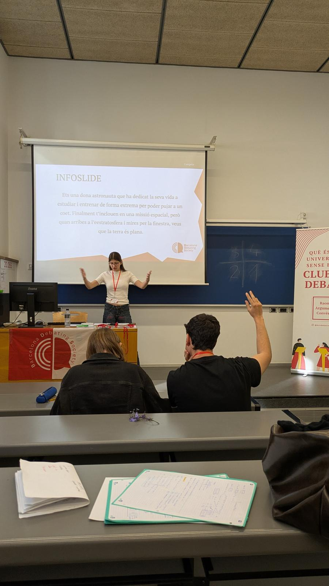
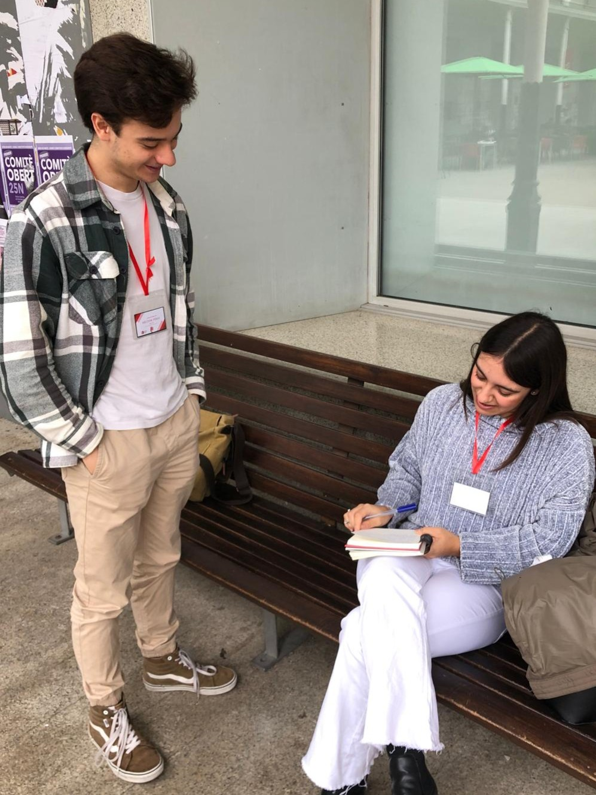
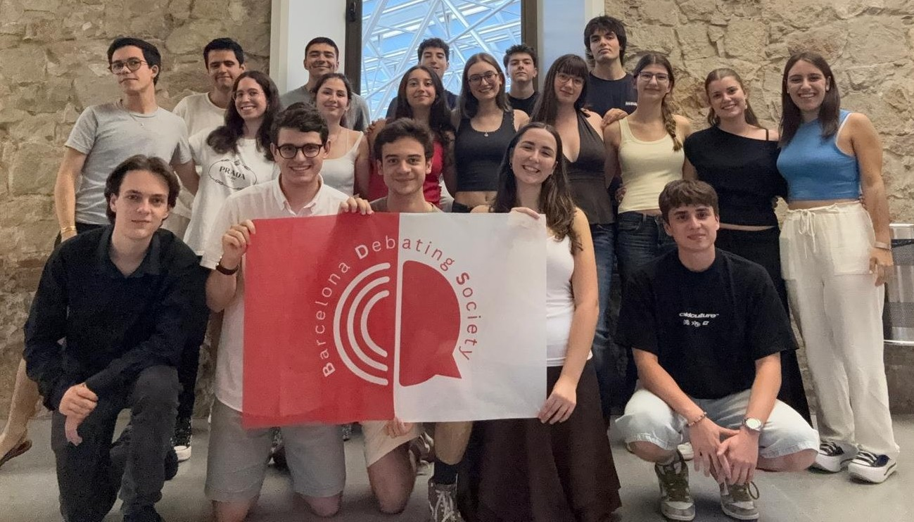
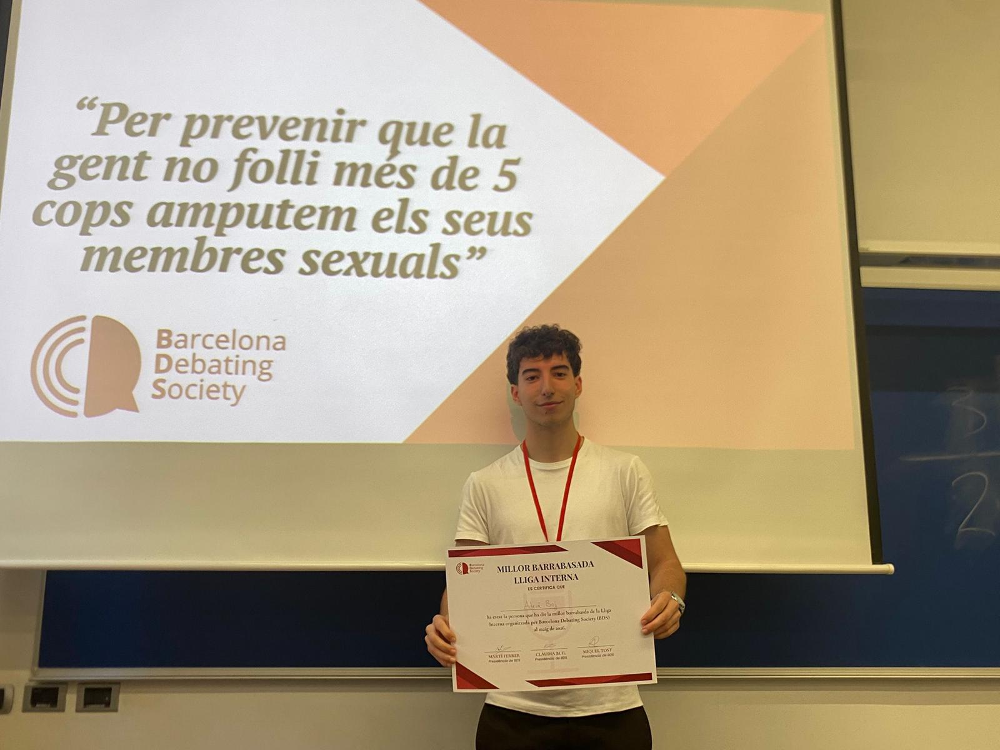
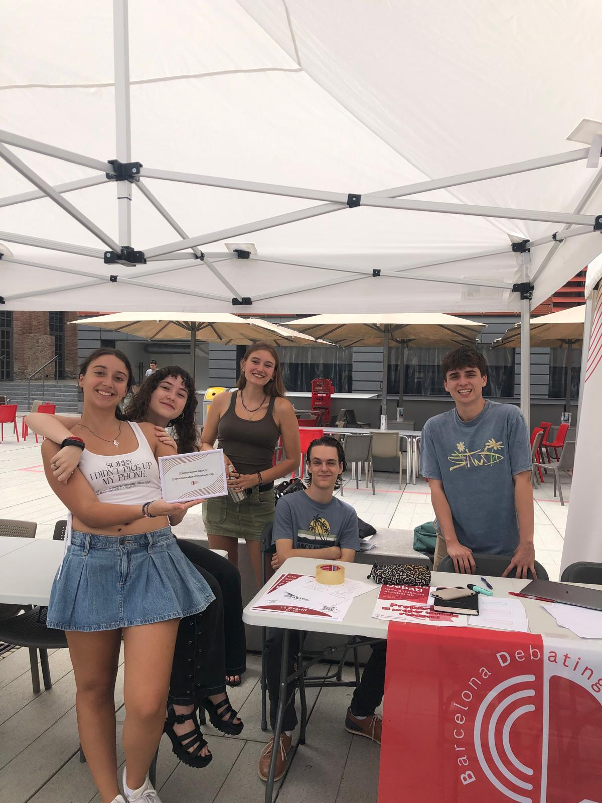
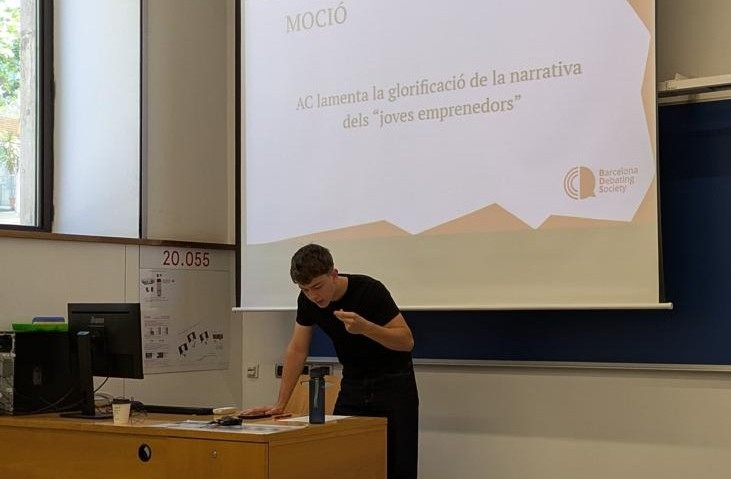
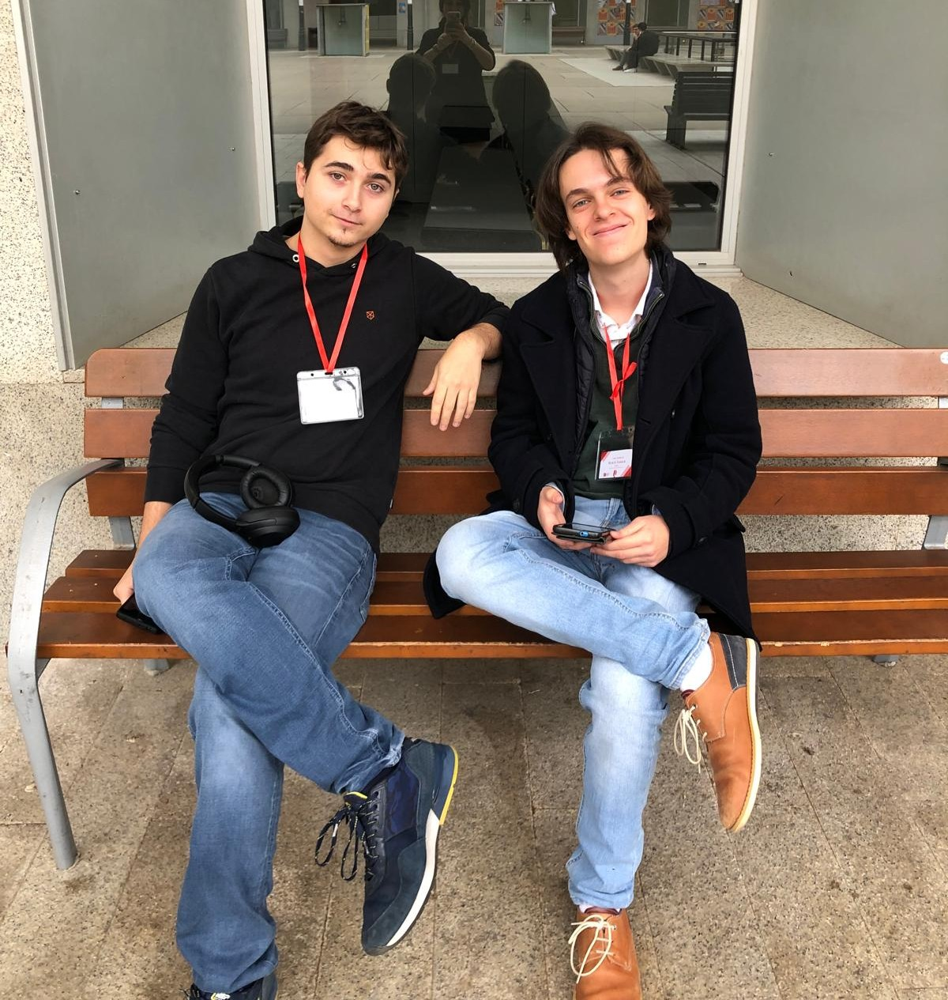
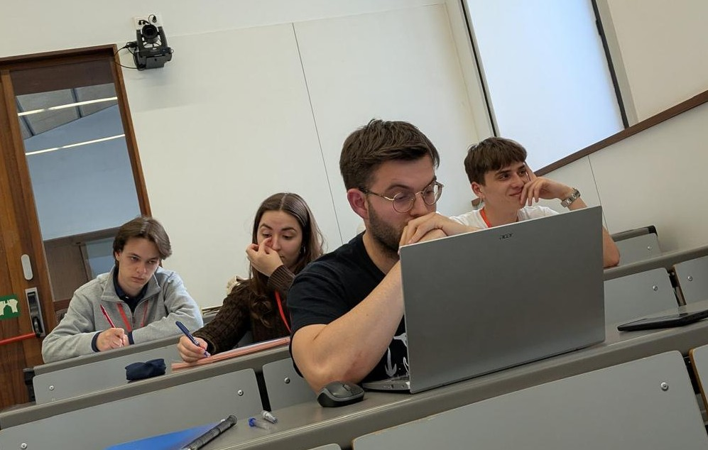
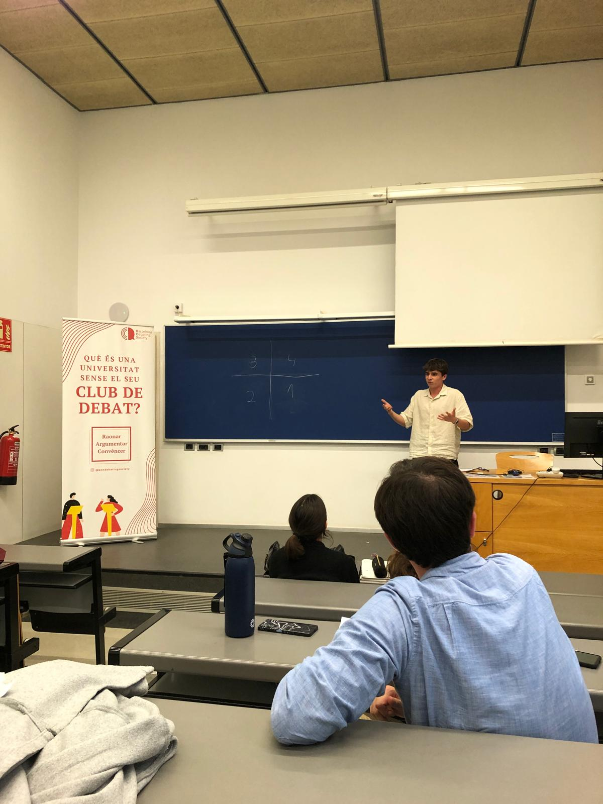

Club de debat de la Universitat Pompeu Fabra
Som la Barcelona Debating Society. Aprenem a parlar en públic, a argumentar i a pensar de manera crítica debatent en format Parlament Britànic sobre els temes que mouen el món.
A diferència del debat acadèmic (que demana hores i hores de feina a casa), el Parlament Britànic es prepara sobre la marxa. Et donem el tema 15 minuts abans de debatre i, sense internet ni cap informació privilegiada, amb el que saps del món i una mica de tècnica ja estàs a punt.
És el format perfecte per a qui té ganes d'aprendre i de discutir, però poc temps: pots aprendre a parlar en públic dedicant-hi només una tarda a la setmana, sense deures ni investigacions infinites. I és el millor debat per aprendre a improvisar, a defensar qualsevol posició i a perdre la por a parlar sense un suport digital al darrere.
Però la BDS és molt més que debatre. Som un grup d'amics: fem excursions a la muntanya, anem a la platja, organitzem tardes de jocs de taula i celebrem cada torneig com toca. Aquí es ve a aprendre… i a quedar-se.
Vull provar-hoPerd la por a l'escenari i aprèn a defensar les teves idees amb seguretat.
Analitza qualsevol tema des de tots els angles i construeix arguments sòlids.
Una tarda a la setmana, sense feina a casa: el debat que encaixa amb la vida universitària.
Coneixeràs gent de tota la universitat amb les mateixes ganes que tu.
El Parlament Britànic (BP) enfronta 4 equips de 2 persones: dues defensen la moció (Govern) i dues hi estan en contra (Oposició). Cada parella ocupa una cambra amb un rol propi.
El número de cada rol marca l'ordre de participació. Cada orador té un torn de 7 minuts.
👆 Clica cada posició per veure què fa
La moció és el tema del debat. Comença per AC («Aquesta Casa») o ACCQ («Aquesta Casa Creu Que…»). Aquestes són algunes de les que hem debatut:
El millor de la BDS passa sovint quan baixem de l'escenari. Excursions, platja, jocs de taula, cervesades… i molt bon ambient.









Els esdeveniments d'aquest any encara s'estan tancant. A confirmar per al curs 2026/27.
Aquest any fem un pas endavant: la BDS organitzarà el seu propi torneig. Volem portar a la UPF equips de tot el país per a un cap de setmana de debat del més alt nivell, amb la nostra empremta i la nostra hospitalitat.
📩 Vols participar-hi? Escriu-nos a barcelonadebating@gmail.com.
Obrim les portes a tothom qui vulgui aprendre, sense experiència prèvia. T'ensenyem el format i la tècnica i et llancem a debatre de seguida.
En cas de dubte, escriu-nos a barcelonadebating@gmail.com.